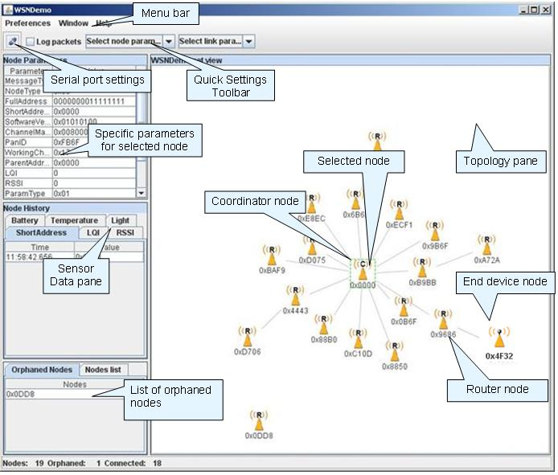

The WSNDemo application demonstrates wireless sensor network (WSN) organization and sensor data collection from network devices on the central coordinator node.The WSNMonitor GUI application can be used on a PC to display the network topology and sensor data in an easy-to-interpret graphical form.
The device type is defined by the APP_DEVICE_TYPE parameter thus firmware for each device type shall be recompiled with updated value of the APP_DEVICE_TYPE parameter.
Network start procedure is initiated automatically after the device powers up. The coordinator organizes the wireless network according to settings in the configuration.h file while routers and end devices try to join the network with specified parameters.
After the network join each node starts periodically sending data packets containing node information and sensor measurements with the APP_TIMER_SENDING_PERIOD interval to the coordinator. The coordinator receives data frames and forwards them to a PC via the USART interface. It also periodically sends own sensor data directly to the serial port.
To observe WSN activities graphically the WSN Monitor GUI application should be started on the PC the coordinator is connected to.
In order to use standard security mechanism described in ZigBee specification, WSNDemo shall be compiled with properly configured security-related parameters.
If LEDs are present on the board, then they are used by the application:
| APP_DEVICE_TYPE | Specifies the device type. |
| APP_TIMER_SENDING_PERIOD | The time interval used for periodic sensor data transmissions. |
| APP_THRESHOLD_FAILED_TRANSMISSION | The number of failed transmissions after which the node leaves the network. |
| CS_NWK_ADDR | Specifies the node's short address. Can be used only with CS_NWK_UNIQUE_ADDR set to true. |
| CS_NWK_UNIQUE_ADDR | Specifies whether the short address is set to a predefined value or to a random value; is set to true by the application. |
| CS_END_DEVICE_SLEEP_PERIOD | The duration of the end device sleep period given in milliseconds. Should be the same on parent and children nodes. |
| CS_CHANNEL_MASK | Specifies a channel mask to be used for network operation. |
| CS_CHANNEL_PAGE | Specifies a channel page to be used. |
| CS_EXT_PANID | Specifies the network extended PANID. Should be unique at a given location. |
| CS_UID | The extended address for platforms where it is not available via the special UID chip or an external EEPROM. |
The description of parameters common for all applications can be found in Sample Applications Overview. ConfigServer parameters are described in the Configuration Server section.
The source code of the WSNDemo application is located in yhe
WSNMonitor is a PC-based GUI diagnostic application for WSNDemo used to
display network topology and other information about the network.
To install the program run WSNMonitorSetup.exe
located at
WSNMonitor displays the network topology in real time and updates it automatically as the nodes join or leave. The nodes are represented by icons with the node data tips. The links between the nodes are tipped with the link quality data. Sensor data for each node is recorded and may be visualized in graphical and table formats.
On WSNMonitor startup a proper communication port should be selected using the serial port settings button from the toolbar. Other program menu and toolbar items can be used to control the node and topology outlook.
A typical WSN Monitor screen is shown in the figure below.
